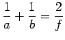

Inhalt Index DeskTop Bronstein

 Funktionen und ihre Darstellung Nomographie Fluchtlinientafeln
Funktionen und ihre Darstellung Nomographie Fluchtlinientafeln


Wählt man den Nullpunkt als gemeinsamen Punkt der drei Geraden, die die drei Skalen für z1,z2 bzw. z3 tragen, dann geht (2.288) in
über, da die Gleichung einer Geraden durch den Nullpunkt mit y=mx beschrieben werden kann. Rechnet man die Determinante in (2.289) aus, dann erhält man
oder
Dabei sind die Größen C1,C2 und C3 Konstanten.
| Beispiel |
|
Die Gleichung  stellt einen Spezialfall von (2.290b) dar und kommt z.B. in der Optik oder beim Parallelschalten von Widerständen vor. Das zugehörige Fluchtlinien-Nomogramm würde dann aus drei gleichmäßig unterteilten Skalen bestehen. |